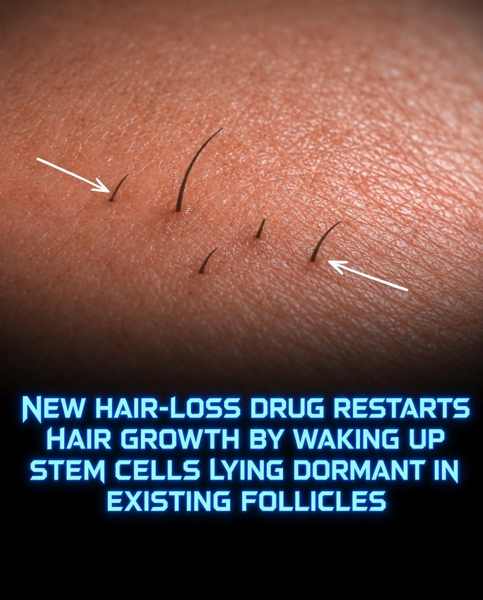
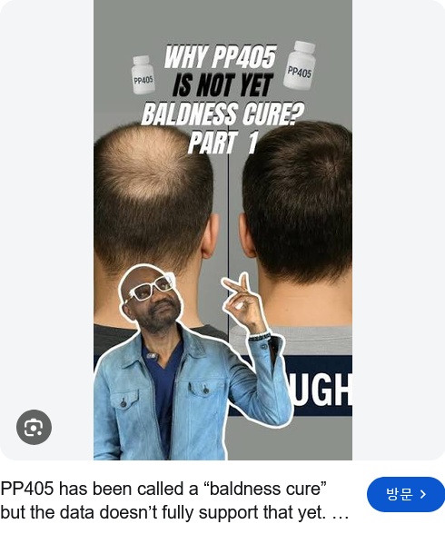

https://cafe.daum.net/ssaumjil/LnOm/3377301?svc=cafeapi

미국 펠라지 제약회사가 진행중인
휴먼중인 모낭 줄기세포를 PP405라는 물질로
다시 활성화시키는 탈모 치료제
임상 2a상 결과
4주 도포후 4주 휴지기
다시 4주 도포결과
탈모환자 78명중 31%의 환자의
휴면중인 모낭에서 모발이 자라남
현재 600명을 대상으로 신규 임상 테스트중
2027년 말경 임상테스트 완료예정 이후 FDA신청 후
상용화는 2028~2030년 예상

정수리 탈모는 어느정도 극복해도
앞머리 탈모는 극복 못하는듯

와우